はじめに
この手順は「ImageMagickってなに？」と言う方を対象に書かれています。このツールでImageMagickを使用するためにセットアップする手順の一例です。
すでにImageMagickをセットアップした環境をお使いの方はそちらを使用することも可能です。設定ファイル編集手順書を参照し設定ファイルを編集してください。
１．ImageMagickオフィシャルWebサイト[http://www.imagemagick.org/]を開きます。
２．右にある"Binary Releases"の"Windows"を開きます。
３．"Win32 dynamic at 16 bits-per-pixel"を任意の場所にダウンロードします。ダウンロード元はHTTP or FTPどちらでもかまいません。容量は12MByte程度あります。(2009/10/06現在)
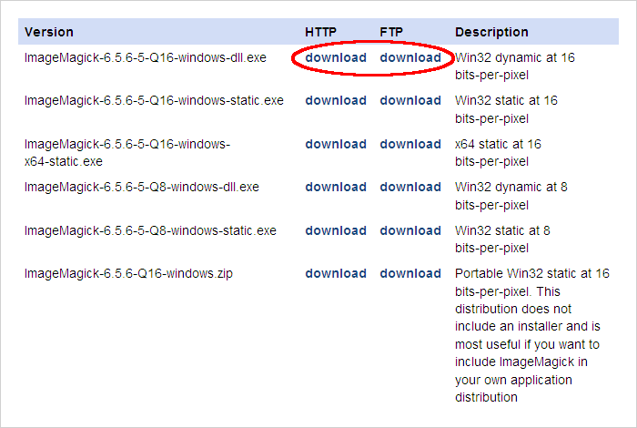
４．ダウンロードしたファイルはインストーラーとなっていますので実行します。
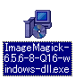
５．インストーラーが立ち上がるので"Next"をクリックします。

６．ライセンスが表示されます。ライセンスを確認後に"I accept the agreement"を選択して"Next"をクリックします。
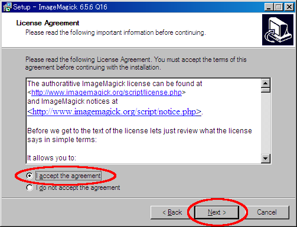
７．インストール作業に関する情報が表示されます。"Next"をクリックします。
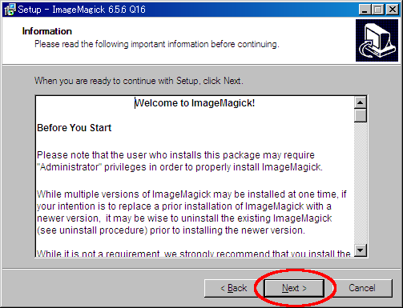
８．インストールするフォルダを選択します。変更の必要がなければそのまま"Next"をクリックします。こので選択したフォルダを後で使用しますのでメモを取っておいてください。
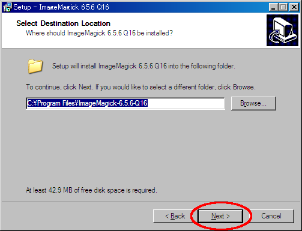
９．スタートメニューへ登録するフォルダ名を設定します。変更の必要がなければそのまま"Next"をクリックします。
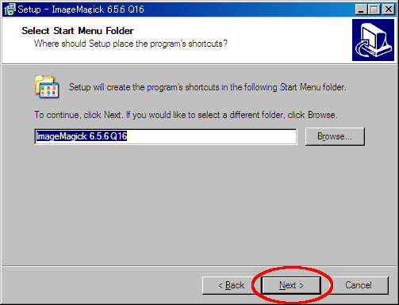
１０．インストールオプションの選択画面が表示されます。"Create a desktop icon"と"Add application directory to your system path"のチェックをはずして"Next"をクリックします。
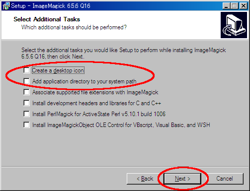
１１．"Install"をクリックしてインストールを開始します。
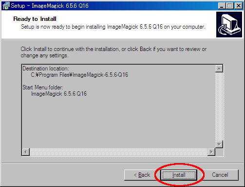
１２．インストールの進行状況を示す画面が表示されます。しばらくお待ちください。
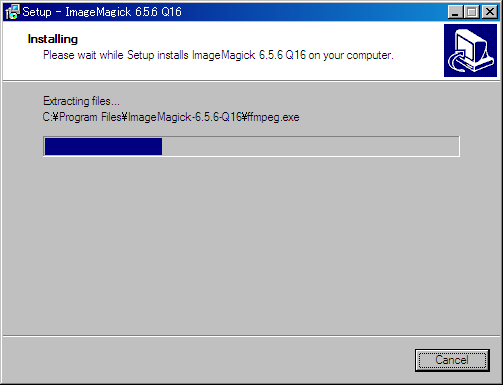
１３．ImageMagickの使用方法に関する情報が表示されます。"Next"をクリックします。
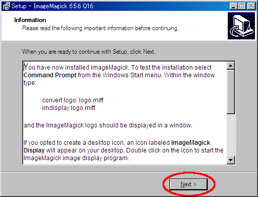
１４．"View index.html"のチェックをはずして"Finish"をクリックしてください。
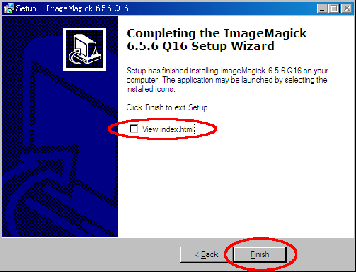
１５．ImageMagickのセットアップは終了です。